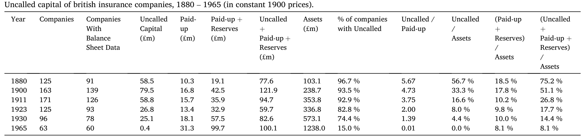
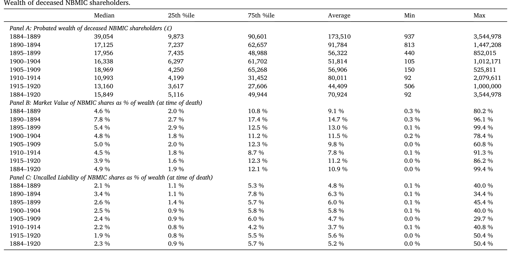
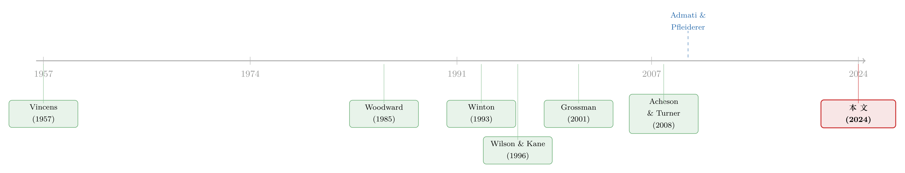

股东连带责任是怎么消失的？——一段被规模悄悄改写的金融史
本文读的是 Bogle, Campbell, Coyle & Turner (2024, Journal of Financial Economics)：他们用手工整理的英国保险业档案数据，追问一个被忽视的问题——曾经无处不在的「股东连带责任」究竟为什么会彻底消失。三个候选答案里，监管替代和「名存实亡」都被数据否决；真正的答案是，当保险公司靠内生增长和并购越做越大、风险池越来越分散，这层额外的「缓冲垫」就不再被需要，而投资者一直为它索取风险溢价，于是股东顺水推舟地把它抹掉了。
1 引言：一个我们以为早已盖棺定论的问题
2008 年金融危机之后，有一类声音一直没有平息：既然银行家把风险甩给了储户和纳税人，为什么不让股东把身家也押上去？Admati 和 Pfleiderer（2010）就正式提议过一种「增加责任的股权」(increased-liability equity)，让大型金融机构的股东承担超出出资额的责任。这个想法听起来很新，其实是一种复古——在二十世纪上半叶以前，金融机构的股东本来就要承担这样的责任。
于是一个自然的问题浮出水面：如果股东连带责任 (shareholder liability) 真的那么有用，它当初为什么会消失？
奇怪的是，这个问题几乎没人认真回答过。文献里关于股东连带责任「有没有用」的争论汗牛充栋，但「它是怎么死的」却几乎是一片空白。本文的四位作者把目光投向了一个绝佳的实验室——英国保险业。这个行业的历史可以一直上溯到 1720 年之前，数据跨度足够长，而且它的「死亡」过程被档案完整地记录了下来：从 1880 年到 1975 年，股东连带责任在这个行业里从近乎全覆盖，一路走到彻底归零。
2 先讲清楚：什么是股东连带责任
在 1862 年《公司法》(Companies Act) 之前，英国保险公司想获得有限责任 (limited liability)，只能靠皇家特许或议会立法。1862 年之后，绝大多数公司都登记为「形式上的有限责任、但带扩展责任」——也就是说，公司账面上有一笔未催缴资本 (uncalled capital)：董事可以随时催缴，破产时债权人和保单持有人也可以催缴。
为什么保险公司要给自己套上这么一道枷锁？按照 Lekkerkerker 和 Peters（1995）的说法，股东资本在保险业里扮演的是一个缓冲垫：当灾难性的索赔超过了保费收入，这笔钱就被「叫」出来填窟窿。它有两层作用：
- 缓冲损失：普通股本和准备金是第一道防线，未催缴资本是第二道防线；
- 约束风险转移 (risk shifting)：股东自己有真金白银押在里面，就有动力去盯着管理层别乱来——保单持有人因此不必付出高昂的监督成本，他们只需要知道「股东连带责任存在且可信」就够了。
这套「股东有切肤之痛、所以会替债权人看门」的逻辑，正是 Jensen 和 Meckling 那条代理成本主线的古老变体（关于这条主线，可参见《债务这副药，为什么不能全吃？——重读 Jensen 和 Meckling 五十年》）。
那么，这道看起来如此有用的防线，到底是怎么被拆掉的？作者摆出了三个假说。
3 三个假说
假说一（监管替代）：政府提供了保单持有人保护，连带责任就多余了。 假说二（名存实亡）：它早就是 de jure 扩展、de facto 有限——拆掉它只是承认现实。 假说三（规模与分散）：公司越做越大、风险越分越散，这层缓冲不再被需要，而它本身又有成本，于是被抹掉。
接下来的全部功夫，就是用数据把前两个假说一个个排除，再把第三个钉死。
4 假说一：是监管把它「顶替」掉了吗？
直觉上，这个故事很顺：政府一旦给保单持有人兜了底，股东连带责任自然就没存在的必要了。但时间线对不上。
英国保险监管的总基调，从 1870 年《人寿保险公司法》开始，一直是所谓「公开即自由」(freedom with publicity)——只要求公司公开账目、定期请精算师审查，并不限制公司使用未催缴资本。1909 年、1946 年、1958 年的几部法案，要么是合并旧法，要么是给新公司设最低资本门槛，对已经在运营的老公司手里那笔连带责任几乎毫无触动。
真正第一部为客户提供明确担保的，是 1975 年的《保单持有人保护法》(Policyholders Protection Act)——它要求保险公司缴纳费用，建立一个政府担保基金，在公司清算赔不出钱时替保单持有人付到保单价值的 90%。
但问题在于：到 1975 年，股东连带责任早就死透了。从下面这张核心的描述性统计表可以看到，1880 年还有 96.7% 的公司带未催缴资本，到 1965 年这个比例已经掉到 15%；1974 年全行业只剩下一家，当年就被收购，1975 年归零。换句话说，安全网是在病人咽气之后才铺上的，而且议会辩论里压根没提过股东连带责任的消失。作者由此干脆利落地否掉了第一个假说。

Table 1
5 假说二：它是不是早就「名存实亡」？
这是更有意思、也更难反驳的一个假说。逻辑是这样的：保险公司的股票可以自由转让，如果有人把股票卖给了一个根本拿不出钱来应付催缴的穷光蛋，那么这份连带责任在法律上 (de jure) 是扩展的，在事实上 (de facto) 却是有限的。果真如此的话，抹掉它就只是「承认既成事实」而已。
作者从两个方向把这个假说拆开。
第一，催缴到底执行不执行？ 答案是：执行得相当无情。最著名的例子是 1878 年格拉斯哥城市银行 (City of Glasgow Bank) 倒闭——这家无限责任银行垮台后，股东被一路追缴到底，储户一分钱没少拿，但大多数股东破了产（Acheson and Turner, 2008）。1922 年《泰晤士报》评论 National Benefit Assurance 催缴资本一案时更是直言：「未催缴资本的存在是动真格的」。再加上普通法和 1862 年公司法规定股东卖出股票后一年内仍要担责，这就堵死了「危机一来就把股票甩给穷人」的逃生通道。
第二，股东到底有没有钱付？ 这是本文最见功夫的一处档案工作。作者找到了北英商业保险公司 (North British Mercantile Insurance Company, NBMIC) 的股东名册——这是 1913 年按市值排名全英第 5 大保险公司、第 65 大公司。他们把 1882–1920 年的股票过户簿数字化，得到 33,850 笔转让，再顺着遗嘱执行人卖股票的线索，去 Ancestry 上查这些已故股东的遗产认证 (probate) 记录，最终拿到了 562 位已故股东的财富。
结果如下表：中位数股东的遗产财富是 £15,849（约合 2022 年的 200 万英镑），NBMIC 股票只占其财富的 4.9%；而他们按每股 £18.75 计算的未催缴责任，只相当于中位数股东财富的 2.3%。也就是说——就算最坏的情况发生、全额催缴，股东也绰绰有余地付得起。「名存实亡」一说，再次被数据否决。

Table 2
但真正关键的一步在于：如果连带责任既被执行、股东又付得起，那它就不是无关紧要的——它应该被市场定价。于是作者用 1830 到 1929 年的月度股价，比较了「带连带责任」和「不带连带责任」两类保险股的风险调整后收益。无论是投资组合分析 (portfolio analysis) 还是 Fama-MacBeth（1973）回归，结论都一致：带连带责任的保险股，收益更高。NBMIC 的股票即便价格相对其同行折让明显，它超出市价的额外责任平均也高达 50% 左右。
这是整篇论文的枢纽：连带责任不是一纸空文，它实实在在地抬高了公司的资本成本。投资者讨厌它，并为承担它索要补偿。这就给「为什么要抹掉它」埋下了动机——也把我们逼向第三个假说。
6 真正的反转：是「变大」杀死了股东连带责任
既然连带责任有成本，公司当然有动力去掉它；可它们为什么之前不去、后来又去了？作者给出的答案，藏在一个看似无关的变量里——公司规模。
保险赔付天然是波动的，某一年的灾难可能让索赔暴涨。连带责任这层缓冲，正是为了应付这种「尾部」而存在的。但保险有一个朴素的特性：只要承保的保单足够多、彼此相关性足够低，平均赔付的波动就会被摊薄。这就是标准的分散化 (diversification) 算术——对于 \(n\) 份相关系数为 \(\rho\)、方差为 \(\sigma^2\) 的赔付，其平均值的方差为：
$$\mathrm{Var}\!\left(\frac{1}{n}\sum_{i=1}^{n} X_i\right) = \frac{\sigma^2}{n} + \frac{n-1}{n}\,\rho\,\sigma^2 \;\xrightarrow[\;n\to\infty\;]{}\; \rho\,\sigma^2$$
当 \(\rho\) 很小、\(n\) 很大时，这个方差会被压到很低的水平。直觉很简单：一家承保几百份保单的小公司，遇到一次大灾就可能伤筋动骨，那层连带责任的缓冲就有用；而一家承保几百万份、业务遍布各地各险种的巨型公司，单一冲击被分散得几乎可以忽略——那层额外缓冲被真正「叫」出来的概率，趋近于零。既然如此，留着它就只剩成本、没有收益了。
数据完美地支持了这个故事。作者手工整理了财务报表数据，发现：
- 规模是连带责任水平的重要决定因素，规模的变化与未催缴资本的变化系统性地同向移动；
- 未催缴资本名义价值最初的大幅下降，主要发生在公司因并购而消失之时——行业在大规模整合；
- 老牌公司把未催缴资本看得很「黏」(sticky)，不愿意主动、显式地削减它的名义金额。
于是出现了一个非常漂亮的「分子—分母」分解（同样在表 1 里）：未催缴资本对资产的比率，从 1880 年的 56.7%，一路降到 1900 年的 33.3%、1930 年的 4.4%、1965 年的 0.0%。但这主要不是因为公司削减了未催缴资本（分子），而是因为资产爆炸式增长（分母）——总资产从 1880 年的 103.1 百万英镑（1900 年不变价）涨到 1965 年的 1238.0 百万英镑。与此对应，连带责任的「倍数」也从 1880 年的「五倍以上」（每 £1 实缴对应 £5.67 待缴）跌到 1930 年的「约两倍」（£1.39），再到 1965 年的几乎为零。
换句话说，股东连带责任不是被谁一刀砍掉的，而是在公司不断长大的过程中，被资产负债表稀释到了无关紧要——最后再由公司慢慢地把那点名义残值通过资本化准备金抹平。规模，才是那把真正的手术刀。
7 文献脉络
这篇论文坐在两条线索的交汇处。
一条线索是股东连带责任与金融机构风险承担。早期的实证研究（Esty, 1998；Grossman, 2001 等）大多发现，带双重责任 (double liability) 的银行风险更低、更不容易倒闭，这正是危机后有人主张恢复它的底气。但证据并不一边倒——别的国家的数据并不总能复现这种关系，连带责任也没能保证大萧条期间的稳定。
另一条线索更贴近本文的问题——连带责任究竟是怎么退场的。Vincens（1957）很早就观察到，大萧条期间催缴资产的尝试暴露了双重责任的种种问题；Wilson 和 Kane（1996）进一步论证，1930 年代初的银行恐慌改变了大银行大股东的算计，他们转而游说、并最终用联邦存款保险换掉了双重责任。这条线索几乎全部讲的是美国银行业，而且把退场的原因归结到危机和监管替代上。

本文的位置因此很清楚：它把镜头从美国银行业移到了英国保险业，并给出了一个截然不同的退场机制——不是监管替代，也不是催缴出了问题，而是行业增长与整合让连带责任失去了用武之地。需要提醒的是，作者自己也很诚实：连带责任在保险业的特殊角色（给保单持有人信心）未必能照搬到铁路、债券等其他行业，所以本文的结论不必然能解释其他行业里连带责任的消失。
8 评论与延伸（Q&A + 研究方向）
(a) 几个可能的疑问
Q：把「监管没及时出现」当作否定监管假说的证据，是不是太简单了？
时间顺序确实是强证据：连带责任在 1880–1930 年就已大幅消失，而政策网（1973 监管、1975 保护法）晚了几十年，议会辩论里也只字未提它的消亡。但严格说，这只排除了「明确的法定担保」这一种替代物，不能排除更隐性的制度变化（如会计披露、精算审查的常态化）逐步降低了连带责任的边际价值。
Q：用「带 vs 不带连带责任」两组公司的收益差，来证明连带责任被定价，干净吗？
这是全文识别上最脆弱的一环，作者也直说了：两类公司之间可能存在无法观测的差异（业务结构、治理、风险偏好），这些差异本身就可能驱动收益差。所以「风险溢价」更像是相关性证据，而非干净的因果。
Q：NBMIC 一家公司的股东财富，能代表整个行业吗？
作者的论证方向很聪明：NBMIC 是低面值、高流动性、多地挂牌的大盘股，如果有谁最容易「名存实亡」，那也该是它。连它的股东都富到能轻松覆盖催缴，其他更封闭的公司只会更稳。但遗产认证财富会系统性低估真实财富（1926 年前不含已结置地产），且已故股东偏老、偏富、偏低风险偏好，样本未必代表全体股东。
Q：连带责任明明有成本，公司为什么不早点去掉，非要等规模上来？
这正是本文最精彩的张力。因为它同时是给保单持有人的信心机制——贸然撤掉会吓跑客户。只有当公司大到足以靠自身的普通股本、准备金和分散化来提供同等安全感时，撤掉它才不会损害客户信心。所以「变大」既降低了它的收益，又降低了撤掉它的代价。
Q：「未催缴资本/资产」比率的下降主要来自分母，这个发现有多重要？
非常重要，因为它直接反驳了「公司主动废除连带责任」的叙事。名义未催缴资本是「黏」的、下降缓慢；比率之所以崩塌，是资产暴涨稀释的结果。这说明连带责任更像是被增长淹没，而非被一纸决议废除。
Q：这对今天「让银行股东重新承担连带责任」的提议意味着什么？
有点反讽。本文暗示：连带责任之所以消失，恰恰是因为大型金融机构靠规模和分散把风险池做厚了，使这层缓冲显得多余。那么在今天重新引入它之前，得先问一句——现代大银行的风险，到底是更像「可分散的保险赔付」，还是像「高度相关、会同时爆雷的尾部」？后者正是危机的本质。
(b) 几个可能的研究问题与提案
1. 把「分散化降低连带责任价值」做成可识别的因果检验
【经济故事】本文的核心机制是「规模↑→分散↑→缓冲价值↓→连带责任被抹掉」，但目前主要是相关证据。如果能找到一个外生改变某些公司风险池分散程度的冲击（如允许跨险种经营的法规变化、强制性的地域扩张限制放松），就能更干净地识别这条链路。 【可行性】中。英国保险业的法规变更和并购事件可作为准自然实验，配合本文已整理的资产负债表面板做双重差分 (DiD)；难点在于找到真正外生、且不直接影响连带责任决策的冲击。
2. 连带责任的「信心价值」能否从保单价格里反推？
【经济故事】作者论证连带责任给保单持有人信心，但这种信心从未被定价出来。若能拿到同期保费/保单条款数据，比较带与不带连带责任的公司在同类险种上的保费差，就能估出客户为这层安全感愿意付多少钱。 【可行性】中偏低。历史保单层面的价格数据稀缺且不标准化，是主要瓶颈；可先在少数留存档案完整的大公司上做案例验证。
3. 把这套逻辑搬到现代信用市场与外资持有人
【经济故事】「持有人结构决定了风险缓冲被定价的方式」这件事，在今天的公司债市场同样成立——不同类型的债券持有人（外资、保险、共同基金）对发行人尾部风险的容忍度与定价并不相同。一个自然的猜想是：当某类对尾部更敏感的持有人占比上升时，发行人会被迫提供更厚的「缓冲」（更多契约、更高利差）。 【可行性】高。TRACE 加机构持仓（如保险公司 NAIC、基金 13F/N-PORT）可构造持有人结构与债券利差的面板；识别上可借用指数纳入、评级临界点等外生冲击。这与《谁在持有这张债券，决定了它的价格》的思路一脉相承。
4. 危机会不会让「连带责任溢价」死灰复燃？
【经济故事】Wilson 和 Kane（1996）讲的是危机改变了大股东的算计。一个有趣的延伸是：在 2008 或 2023 年的银行业冲击前后，市场是否对「股东实际承担更多损失」的银行（如 CoCo 债、可减记工具占比高者）重新索取或减免风险溢价？ 【可行性】高。CoCo/AT1 债券、银行股的事件研究 (event study) 数据齐全，2023 年瑞信 AT1 减记是一个干净的冲击点。可参见《他们年轻时见过银行成片倒下——后来，这成了银行的护城河》对「危机记忆」如何改变行为的讨论。
我的判断
这篇论文最大的贡献，是把一个被默认为「监管使然」的金融史叙事，翻转成了一个市场化的、由规模驱动的故事：连带责任不是被法律废除的，而是被增长稀释、被投资者用风险溢价慢慢逼退的。它把扎实的档案工作（33,850 笔过户、562 位股东的遗产、近百年的月度股价和资产负债表）拼成了一条逻辑链，三个假说逐一证伪/证实的结构也干净利落，读起来很有说服力。
但识别上的软肋同样明显，而且作者很诚实：「带 vs 不带连带责任」两组公司之间的不可观测差异，几乎无法排除，所以「风险溢价被定价」和「规模决定连带责任」更多是相关证据而非因果。我尤其想看到的是一个真正外生的分散化冲击——能把「公司变大」从「公司选择变大、同时也选择撤掉连带责任」这种内生共动里干净地剥离出来。此外，遗产认证财富的系统性低估和样本代表性问题，让「股东付得起」这一结论虽然方向稳健，量级上仍值得保留。
最后，这篇论文对当下「恢复银行股东连带责任」的政策讨论提出了一个尖锐的问题：如果连带责任当年是因为风险被分散得足够薄才退场的，那么在系统性、高度相关的危机面前，它当初被认为「多余」的那个前提，恰恰是最靠不住的。
参考文献
Acheson, G., Turner, J. (2008). The death blow to unlimited liability in Victorian Britain: the City of Glasgow failure. Explorations in Economic History 36, 235–253.
Admati, A., Pfleiderer, P. (2010). Increased-Liability Equity: A Proposal to Improve Capital Regulation of Large Financial Institutions. GSB Research Paper 2043, Stanford University.
Bogle, D. A., Campbell, G., Coyle, C., Turner, J. D. (2024). Why did shareholder liability disappear? Journal of Financial Economics 152, 103761.
Fama, E. F., MacBeth, J. D. (1973). Risk, return, and equilibrium: empirical tests. Journal of Political Economy 81(3), 607–636.
Supple, B. (1970). The Royal Exchange Assurance: A History of British Insurance 1720–1970. Cambridge University Press, Cambridge.
Turner, J. (2014). Banking in Crisis: The Rise and Fall of British Banking Stability, 1800 to the Present. Cambridge University Press, Cambridge.
Vincens, J. (1957). On the demise of double liability of bank shareholders. Business Lawyer 12, 275–279.
Wilson, B., Kane, E. (1996). The Demise of Double Liability as an Optimal Contract for Large-Bank Stockholders. NBER Working Paper 5848.
Winton, A. (1993). Limitation of liability and the ownership structure of the firm. Journal of Finance 48, 487–512.
Woodward, S. (1985). Limited liability in the theory of the firm. Journal of Institutional and Theoretical Economics 141, 601–611.